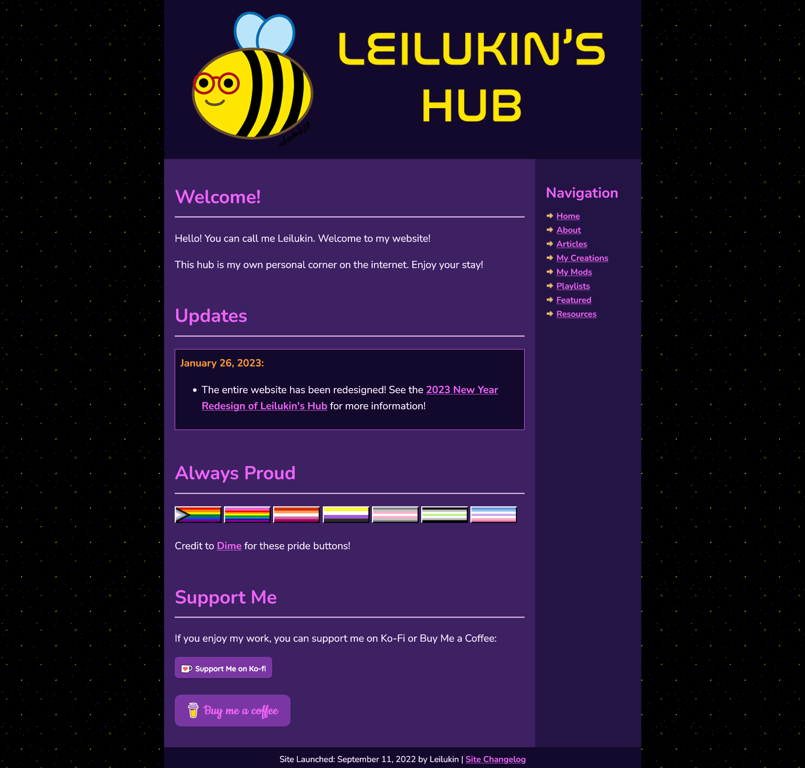

2023 New Year Redesign of Leilukin's Hub
In light of a new year, the Leilukin's Hub website has received a new design on January 26. 2023!
I have wanted to rewrite and redesign this site after learning HTML and CSS more and getting better at writing those languages. With Visual Studio Code and the Live Server extension installed, I have also finally found a good workflow for me to write and test HTML and CSS.
Looking at other Neocities websites have also given me more ideas in enhancing my own website. Special thanks to sadgrl.online, whose various web building resources, including the Layout Builder, have helped tremendously in redesigning this site.
With this 2023 new year redesign of this website, the index page, which is for when you visit the link leilukin.neocities.org, you will be presented with a very simple page, but when you click the "Enter" button to enter, you will be brought to my website's home page, and can start properly browsing my website, and enjoying the new design!
Highlights of the 2023 New Year redesign of Leilukin's Hub:
- Uses purple colour schemes primarily, as purple is one of my favourite colours.
- Each page category has their own CSS file, allowing me to give certain pages unique elements. However, the site still has a main CSS file to be imported into CSS files of other pages, saving me time to edit the CSS files one by one just to tweak a certain part of the main layout design.
- Background image added.
- Sidebars added, with the contents being sticky, so you can still see them while scrolling through.
- The navigation links are now on the right sidebar. Previously, the navigation links of my website are in a row placed at the header section.
- The table of contents of some of my pages is now placed on the left sidebar.
- The website changelog page adds archives for the layout designs of this site and old changelog.
- My video game mod pages have added a filter function, so you can use buttons to view a specific category of mods.
After spending many hours on this site redesign, I am very pleased with how it turns out. Hope you enjoy it!